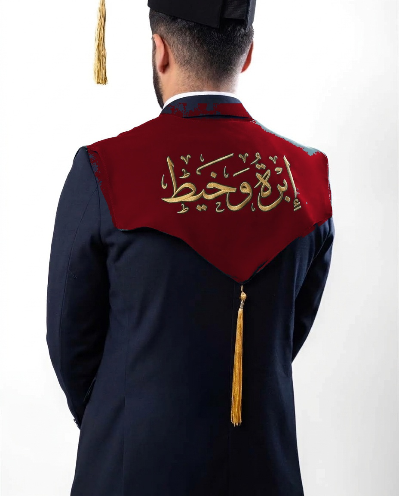

دليل اختيار لون وشاح التخرج للجامعات والكليات العراقية
كيف تختار دفعتك اللون الرسمي للوشاح؟ استعراض شامل للون الماروني، الكحلي، الزمردي، والأسود الملكي وما يرمز له كل لون في التقاليد الجامعية.
دليلك الشامل ليوم التخرج: أصول اختيار الألوان، طرق القياس والتفصيل المتقن، وكل ما تحتاجه لتظهر بأرقى مظهر يليق بإنجازك الأكاديمي.
 ألوان وتنسيق
ألوان وتنسيق
كيف تختار دفعتك اللون الرسمي للوشاح؟ استعراض شامل للون الماروني، الكحلي، الزمردي، والأسود الملكي وما يرمز له كل لون في التقاليد الجامعية.
 دليل المقاسات
دليل المقاسات
المقاسات العشوائية تجعل الروب واسعاً من الأعلى أو طويلاً يتعثر به الخريج. تعرف على كيفية قياس الكتف والكم وطول العباءة لتفصيل يدوم مدى الحياة.

فخامة التصميمما يميز وشاح إبرة وخيط هو قصة الظهر الملكية المنحنية بتطريز ذهبي مجسم يتدلى منها شرابة من القصب اللامع، مما يضفي مهابة استثنائية لصور الظهر والموكب.